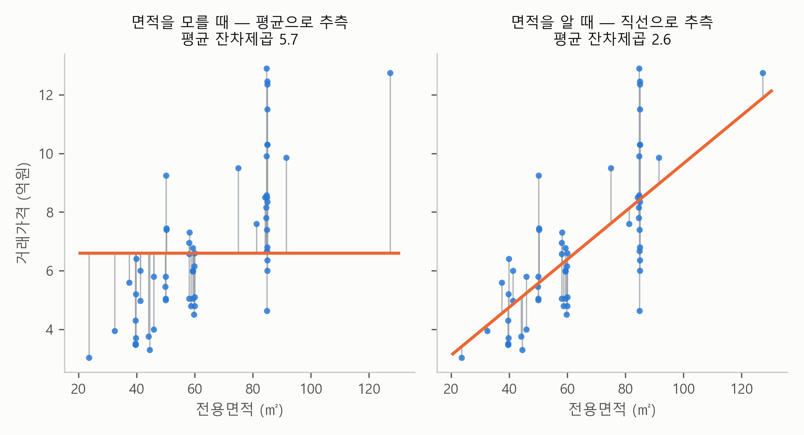
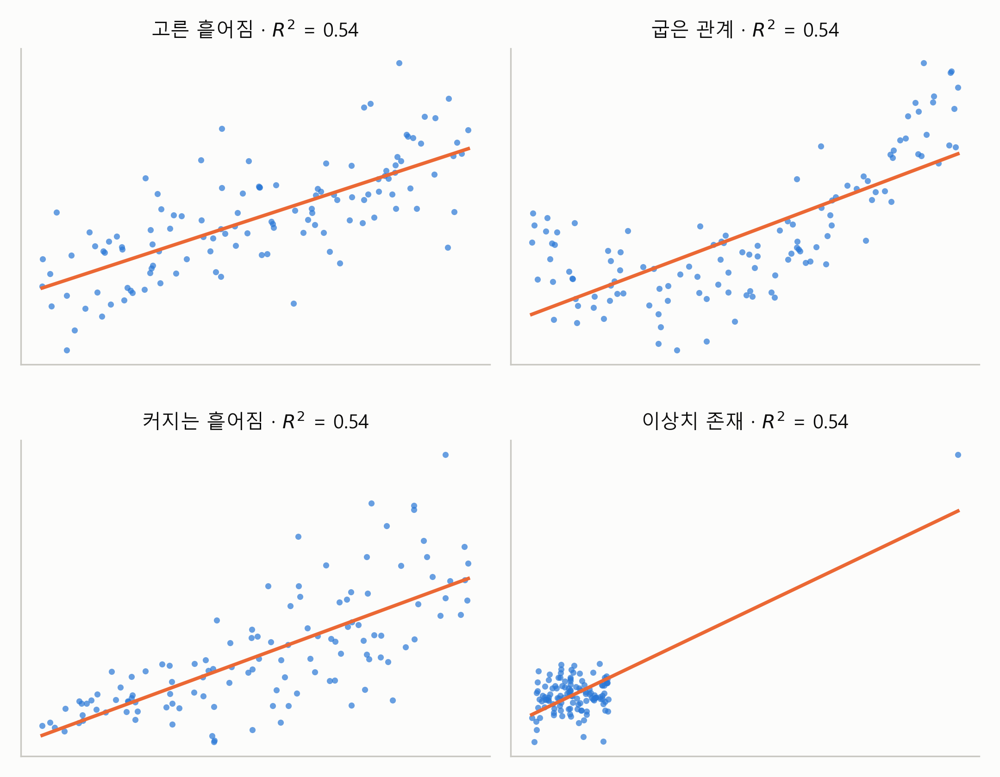
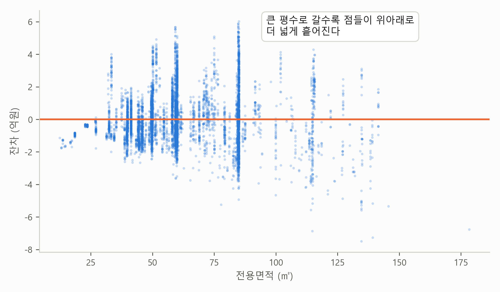

4. 얼마나 설명하나 — \(R^2\)과 잔차#
▶ 이 절의 강의영상
준비 중입니다. 영상이 공개되면 이 자리에 링크가 걸립니다.
이 장 첫머리 보고서의 회귀 결과 표 아래에는 한 줄이 더 있습니다.
\(n\) = 7,366 · \(R^2\) = 0.542 · 잔차 표준오차 1.62억원
앞 절에서 기울기 추정값 0.0818이 우연이 아니라는 것을 확인했습니다. 그런데 “기울기가 0이 아닌 게 확실하다”와 “직선이 가격을 잘 맞힌다”는 별개의 문제입니다. 이번 절의 질문은 이것입니다 — 면적 하나로 노원구 아파트의 가격 차이를 얼마만큼 설명할 수 있나? 다르게 물으면 이렇습니다. 면적을 알면, 가격 맞히기가 얼마나 좋아지나? 남은 두 숫자, \(R^2\)과 잔차 표준오차가 그 답입니다.
몸무게 맞히기가 먼저 알고 있다#
본격적인 계산에 앞서, “설명한다”는 말부터 아주 익숙한 상황으로 감을 잡아 보죠. 친구들과 처음 보는 사람의 몸무게 맞히기 내기를 한다고 합시다. 아무 정보도 없다면 제일 안전한 추측은 평균입니다. 우리나라 성인 평균쯤 되는 몸무게를 부르는 거죠. 크게 틀릴 수도 있지만, 아무 숫자나 지르는 것보다는 낫습니다.
그런데 그 사람의 키를 알려 준다면 어떨까요? 키가 190cm라면 평균보다 무겁겠구나, 150cm라면 가볍겠구나. 추측이 당장 좋아집니다. 여기서 물을 수 있습니다. 키를 알고 나서 맞히기가 얼마나 좋아졌나. 많이 좋아졌다면 키는 몸무게를 잘 설명하는 정보고, 거의 그대로라면 별 도움이 안 되는 정보입니다. 이것이 이 절 전체를 꿰는 한 문장입니다.
설명력이란, 알고 나서 맞히기가 얼마나 좋아졌는가다.
아파트로 돌아오면 키 자리에 전용면적이, 몸무게 자리에 가격이 들어갑니다. 그리고 몸무게 내기와 달리, 여기서는 “얼마나 좋아졌는가”를 정확한 숫자로 계산할 수 있습니다.
면적을 모를 때와 알 때#
어느 거래의 가격을 맞혀야 한다고 해 보죠. 면적조차 모른다면 할 수 있는 최선의 추측은 평균, 6.6억입니다. 앞에서 우리가 직선을 고를 때 썼던 잣대 — 잔차를 제곱해 평균 내기 — 로 이 추측의 빗나감을 측정하면 5.7이 나옵니다.
그림 4-1의 왼쪽 패널이 이것을 그림으로 표현한 것입니다. 그림이 복잡해지지 않도록 7,366건 가운데 60건만 예시로 뽑아 그렸습니다(단, 수치는 전체 기준입니다). 회색 선분 하나하나가 각 거래의 가격이 평균(주황 수평선)에서 얼마나 떨어져 있는지를 보여주고, 이 선분들을 제곱해 평균 낸 값이 5.7입니다.
이제 평균이 아니라 추정한 회귀직선(regression line)으로 추측하면 어떻게 될까요? 오른쪽 패널이 같은 60건 매매에 대한 추측을 평균에서 회귀직선으로 바꾼 모습입니다. 선분들 — 추측의 빗나감 — 이 눈에 띄게 짧아지고, 잔차를 제곱해 평균 낸 값은 5.7에서 2.6으로 내려갑니다.

그림 4-1. 같은 거래들을 평균(왼쪽)과 회귀직선(오른쪽)으로 추측했을 때의 잔차. 평균 잔차제곱이 5.7에서 2.6으로 줄어든다. (노원구 7,366건 중 무작위 60건, 수치는 전체 기준)
회귀직선을 사용하는 것만으로, 즉 아파트의 면적을 사용해 예측한 것만으로 흩어짐의 54%가 사라진 셈입니다. 몸무게 내기로 치면, 키를 듣고 나서 벌점(평균 잔차제곱)이 절반 아래로 줄어든 것입니다. 계산해 보면 (5.7 − 2.6) ÷ 5.7 ≈ 0.54입니다. 바로 이 몫이 \(R^2\)(결정계수, coefficient of determination)입니다.
\(R^2\) = 평균으로 추측할 때의 흩어짐 가운데, 회귀직선이 줄여 준 몫
\(R^2\)이 0이면 아파트 가격 예측에 면적이 아무 도움도 되지 않았다는 뜻이고, 1이면 모든 거래가 정확히 회귀직선 위에 있다는 뜻입니다. 0.542는 그 사이에서 “절반 조금 넘게”에 해당합니다. “가격 차이의 절반가량은 면적만으로 설명된다”라는 보고서의 근거가 바로 이 값입니다.
남은 흩어짐을 원래 단위로 — 잔차 표준오차#
그림 4-1의 오른쪽 패널에 나와 있는 “평균 잔차제곱 2.6”은 회귀직선으로 추측한 뒤에도 남은 흩어짐을 측정한 것입니다. 그런데 여기에는 불편한 점이 하나 있습니다. 제곱해서 모은 값이라 단위가 “억원의 제곱”이어서 감이 오지 않는다는 점입니다. 제곱을 도로 풀면 √2.61 ≈ 1.62억원이 되는데, 이것이 보고서의 잔차 표준오차(residual standard error)입니다. “회귀직선의 예측은 보통 ±1.6억쯤 빗나간다”라고 읽으면 됩니다. 실제로 7,366건 가운데 열에 일곱이 회귀직선에서 ±1.6억 안에 있습니다. 전용 84㎡의 예측 가격이 8.3억이었으니, 실제 가격은 대략 6.7억에서 10.0억 사이가 보통이라는 얘기입니다.
\(R^2\)과 잔차 표준오차는 같은 “남은 흩어짐”의 두 얼굴입니다. \(R^2\)은 단위가 없는 비율이라 자료끼리 비교하기 좋고, 잔차 표준오차는 가격과 같은 단위(억원)라 빗나감의 크기를 체감하게 해 줍니다.
\(R^2\)이 말해 주지 않는 것#
그렇다면 \(R^2\) = 0.54라는 숫자만 보면 자료의 모습이 그려질까요? 그림 4-2는 \(R^2\)이 똑같이 0.54인 네 개의 가상 자료입니다.

그림 4-2. 네 자료 모두 \(R^2\) = 0.54이지만 생김새는 전혀 다르다.
그림에서 보듯이 같은 0.54라도 사정은 제각각입니다. 왼쪽 위의 고른 흩어짐에서는 회귀직선이 할 일을 다 했습니다. 오른쪽 위의 굽은 관계에서는 진짜 관계가 곡선인데 직선으로 요약하는 바람에 모양을 놓치고 있습니다. 왼쪽 아래의 커지는 흩어짐에서는 오른쪽으로 갈수록 예측이 점점 불안해집니다. 오른쪽 아래의 이상치 존재는 멀리 떨어진 이상치(outlier) 하나가 설명력을 통째로 만들어 낸 경우로, 그 점 하나를 빼면 관계가 사라집니다.
\(R^2\)은 성적표의 평균 점수 같은 요약입니다. 두 학생의 평균이 같아도 과목별 점수는 다를 수 있듯이, \(R^2\)이 같아도 빗나감의 패턴은 저마다 다릅니다. 패턴을 보려면 잔차를 직접 그려야 합니다.
그래서 잔차를 그려 본다#
이번에는 노원구 데이터의 잔차만 따로 떼어 그려 보죠. 그림 4-3은 가로축은 그대로 전용면적으로 두고, 세로축에 가격 대신 잔차를 놓은 그림입니다. 회귀직선을 수평선(0)으로 펴 놓고 빗나감만 보는 셈입니다. 이런 그림을 잔차 그림(residual plot)이라고 부릅니다.

그림 4-3. 노원구 7,366건의 잔차. 주황 수평선(0)이 회귀직선을 수평으로 편 것이다.
그림에서 보듯이 노원구 데이터도 “고른 흩어짐”은 아닙니다. 큰 평수로 갈수록 점들이 위아래로 더 넓게 흩어집니다. 40㎡ 아래에서는 보통 ±1억 안팎이던 빗나감이 100㎡를 넘으면 ±2.4억까지 커집니다. 비싼 아파트일수록 가격이 더 크게 출렁이는, 가격 자료의 일반적인 성질입니다. 이런 패턴에는 처방이 있는데, 그것이 다음 절의 주제인 로그입니다.
💡 팁: 받은 보고서에 잔차 그림이 없다면, AI에게 “잔차 그림도 그려 줘”라고 한 줄 요청하면 됩니다. \(R^2\) 숫자만 보고 끝내지 않는 것, 그것이 보고서를 제대로 읽는 습관입니다.
요약 — 직관적 의미
설명력이란 알고 나서 맞히기가 얼마나 좋아졌는가다. 아래 세 개념이 그 대답이다.
\(R^2\) — 평균으로 추측할 때의 흩어짐 가운데 회귀직선이 줄여 준 몫. 즉, 회귀직선의 설명력.
잔차 표준오차 — 회귀직선의 예측이 보통 빗나가는 크기. 노원구에서는 ±1.6억.
잔차 그림 — \(R^2\)이 보여 주지 못하는 빗나감의 패턴을 보는 창.
남는 질문#
회귀직선은 가격 차이의 절반을 설명했고, 남은 빗나감의 패턴까지 읽었습니다. 패턴이 말하는 처방은 큰 값일수록 크게 흩어지는 데이터에는 로그를 취하라는 것입니다. 그 처방을 따라가면 보고서의 보조 분석에 있던 “탄력성 0.84”를 읽을 수 있게 됩니다. 다음 절에서 다룹니다.